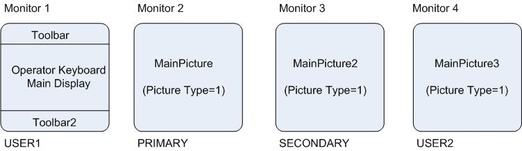

About Operator Keyboard
Operator Keyboard provides a highly-customizable operator environment for up to four monitors in which screen navigation and operation is managed from a single display called the Operator Keyboard. The Operator Keyboard display cannot be replaced, closed, or swapped. Operators can make process changes from the keyboard screen and drive graphics on the other monitors. An Operator Keyboard system does not use the standard DeltaV alarm banner. Rather, the alarm display is based on an association of process alarms with a button on the Operator Keyboard screen. Configuration engineers must configure the way in which operators are notified of and respond to alarms and navigate to open or change displays on the other monitors. Understanding Alarm Management for the Operator Keyboard provides a theory of operation for alarm management in an Operator Keyboard system and Building the Operator Keyboard Display explains how to build the operating screen. Operator Keyboard is designed to be used with touch screens and a standard mouse. For typical operator tasks, a standard keyboard is not required.
Layout Template Determines Picture Layout
Picture layout in an Operator Keyboard system is determined by a layout template file called DeltaV_OK_Picture.Template. Open this file with a text editor such as Notepad and read the comments and instructions in it before editing and saving it. Refer to The Layout Templates topic for information on how to use this file. An Operator Keyboard system makes use of up to four screens and monitors. The screens are named USER1, USER2, Primary, and Secondary and the monitors are numbered 1-4. The monitor number is determined by the physical arrangement of the monitors. Two monitor arrangements are supported by the DeltaV system, refer to Installing and Configuring the Hardware for the supported arrangements. This image shows the default picture layout for an Operator Keyboard system.

Picture layout is flexible and for the most part free-format; however, a couple of restrictions apply. Keep these restrictions in mind when editing the Operator Keyboard Layout file:
The Primary and Secondary screens in an Operator Keyboard system must contain a picture created from the main template. Picture Type =1.
The Operator Keyboard cannot be the Primary or Secondary screen. It must be USER1 or USER2.
When one monitor is flat (installed in a tabletop), it must be the touch screen monitor. Do not use a mouse on the flat monitor.